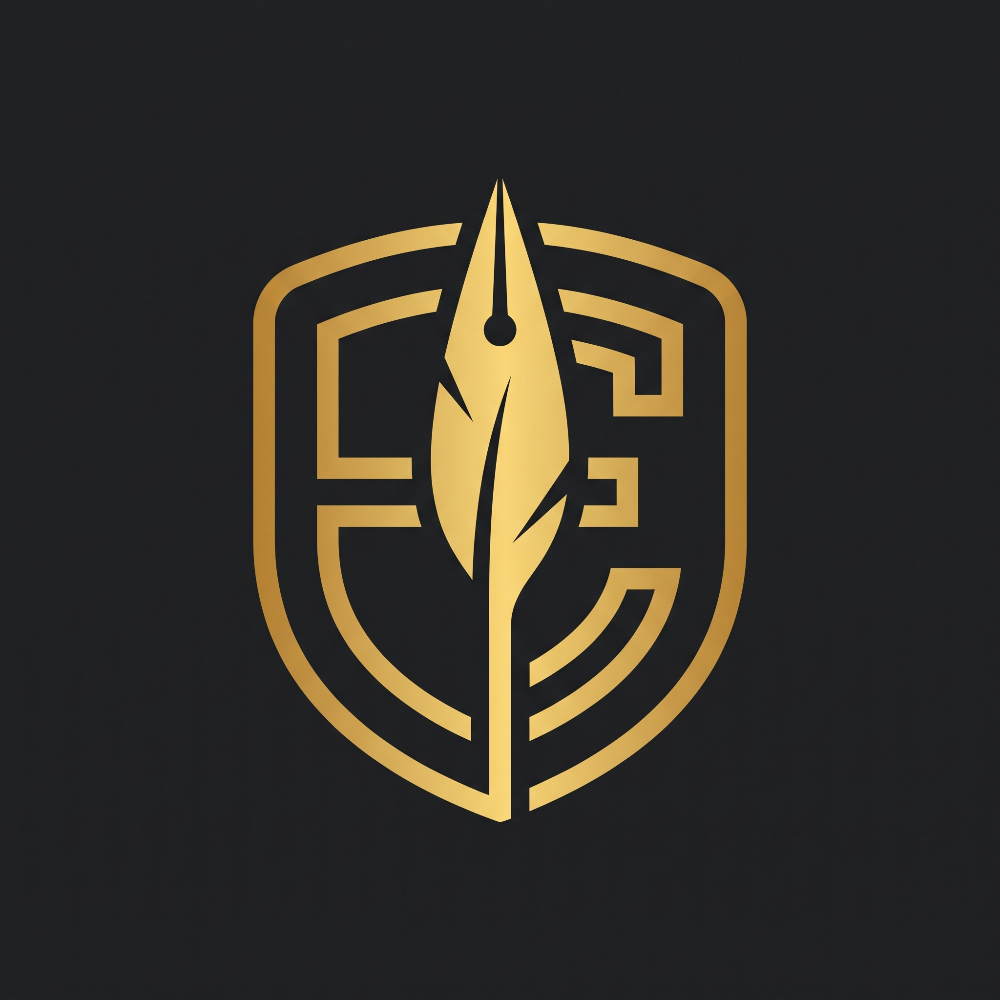

España | Actualidad e Historia
Análisis documental, geopolítica y diseño de información.
🔥
ÚLTIMO ESTRENO: Los Megaincendios
📂
Dossier 02: Análisis de los Incendios
📂
Dossier 01: El Plan de Marruecos